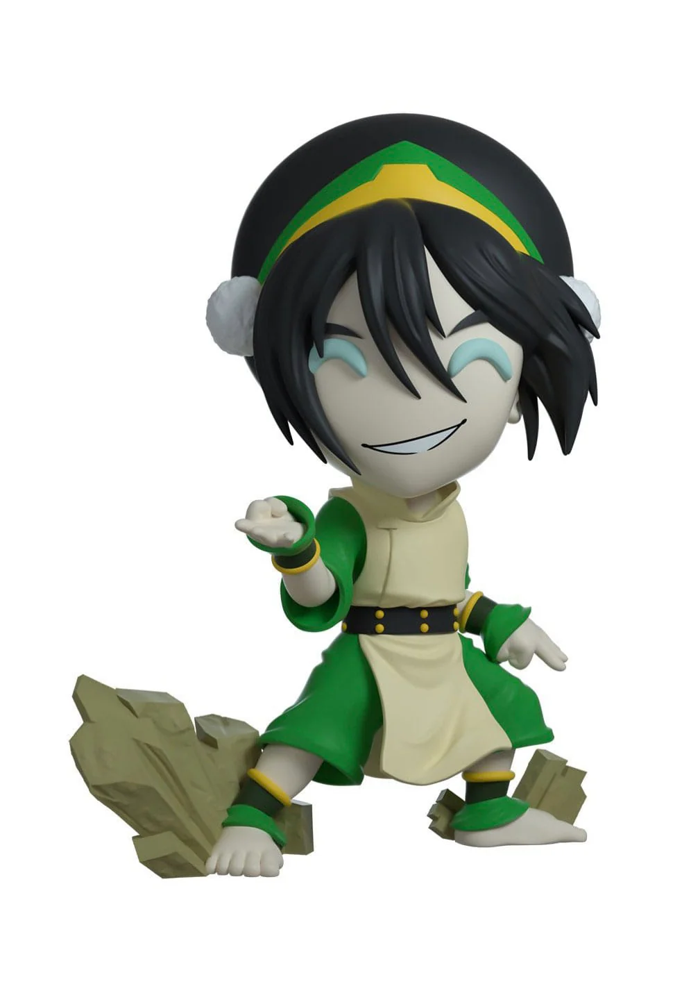

Toph Beifong – Earthbending Master

Bring home the unstoppable Toph Beifong from Avatar:
The Last Airbender! This highly detailed figure shows Toph mid-earthbend,
with rocks rising at her feet.
Material: Polystone resin with PVC details
Size: Approx. 30 cm tall, 20 cm wide, 18 cm deep
Finish: Hand-painted with textured stone effects
A must-have for Avatar fans—strong, bold, and unapologetically Toph.